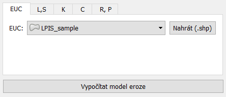
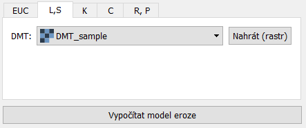
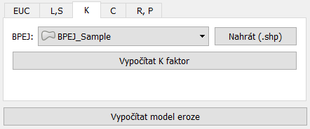
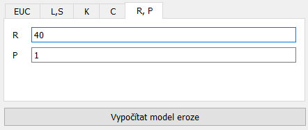

Návod k použití¶
Pro vytvoření erozního modelu je nutné vyplnění pěti záložek, ve kterých jsou voleny vstupy pro určení faktorů v rovnici USLE.
Záložka EUC¶
Zde se volí polygonová vektorová vrstva (.shp) určující erozně uzavřené celky (pozemky), pro které bude určována průměrná roční ztráta. Vrstvu je možné zvolit ze seznamu vrstev, či ji nahrát přes tlačítko Load(.shp).

Figure 1: Záložka EUC
Záložka L,S¶
Zde se určuje raster digitálního modelu terénu, nad kterým bude probíhat výpočet faktorů délky a sklonu svahu (L, S). Vrstvu je možné zvolit ze seznamu vrstev, či ji nahrát přes tlačítko Load(raster).

Figure 2: Záložka L,S
Záložka K¶
Zde se volí polygonová vektorová vrstva (.shp) BPEJ, vrstva musí obsahovat pole s názvem *BPEJ* ve formátu ‘X.XX.XX’, ze kterého se pomocí tlačítka Compute K Factor, vypočte hodnota K. Případně je možné použít vrstvu s už vypočteným K faktorem v poli K. Vrstvu je možné zvolit ze seznamu vrstev, či ji nahrát přes tlačítko Load(.shp).

Figure 3: Záložka K
Záložka C¶
Zde se volí polygonová vektorová vrstva (.shp) LPIS, vrstva musí obsahovat pole s názvem *KULTURAKOD* s jednoznakovým kódem pro využití pozemku. V rolovací nabídce se volí primární plodina pěstovaná na pozemcích s ornou půdou. Poté se C faktor nastaví kliknutím na tlačítko Compute C Factor.
Figure 4: Záložka C
Note
Při využití dat LPIS vyexportovaných z Registru půd (LPIS) a BPEJ z `celostátní databáze<http://www.spucr.cz/bpej/celostatni-databaze-bpej>`_, jejich formát odpovídá požadavkům zásuvného modulu.
Tip
Hodnoty K a C lze poté manuálně upravovat v atributové tabulce.
Záložka R,P¶
Zde je možné upravit hodnotu faktoru přívalového deště R a faktoru protierozních opatření P.

Figure 5: Záložka R,P
Tlačítko Compute erosion model¶
Po nastavení všech vstupních hodnot se stisknutím tlačítka provede výpočet erozního modelu. Tlačítko je viditelné ze všech záložek.